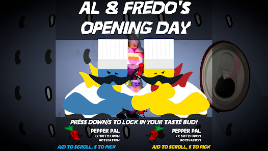
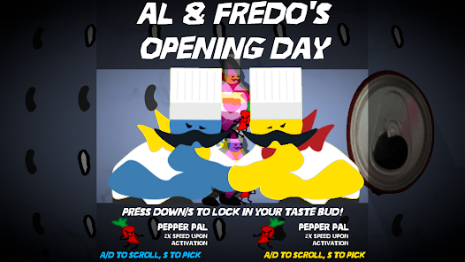

Myth 2 originally only included cutscenes instead of full boss fights. But it led to players getting tired of the repetitive nature of the gameplay. I included the boss fights to add risk and intensity to all of the puzzles while also helping prove the threat that the player faces when fighting them.
Level Design:
The level itself remained the same. But I was able to make each room look distinct and help hint at how to solve each puzzle through lighting and texture work.
Character Design:
Some characters had slight redesigns to keep the look of the game consistent. I made the player character a small knight character both because the height proportions were the best looking from the camera perspective and because the character is much more charming and easy to root for compared to the original design. Each boss was animated in a way that matched their personality, with some bosses having quick and jerky animations while others have very smooth and calculated movements.

 
